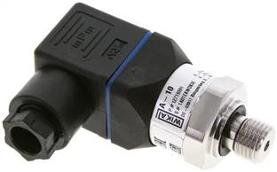
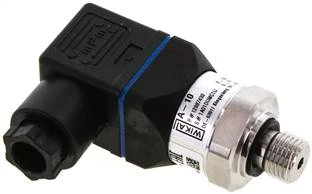
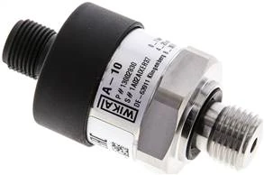

Pressure transmitter
WIKA DMUB 10 ES
0-10 barG1/4
Đo áp suất khí nén, nước, dầu, tín hiệu về PLC
Chi tiết →Tra mã và báo giá pressure transmitter WIKA theo dải đo bar/psi, tín hiệu ra 4-20mA hoặc 0-10V, đầu cắm DIN/M12, ren G1/4 và mức quá áp an toàn cho hệ thống tự động hóa.
Trang này gom các cụm SEO có ý định mua cao: cảm biến áp suất WIKA 0-10 bar 4-20mA, WIKA pressure transmitter G1/4, WIKA DMUB M12, cảm biến áp suất WIKA 0-600 bar, nhà cung cấp WIKA tại Việt Nam.
Một số mã thông dụng nhất — bấm Chi tiết để xem đầy đủ thông số, ảnh và gửi báo giá. Xem toàn bộ mã theo nhóm ở phần bên dưới.
Đo áp suất khí nén, nước, dầu, tín hiệu về PLC
Chi tiết →




Bấm vào từng mã để xem thông số, ảnh và gửi RFQ. Các mã được gom theo nhóm sản phẩm để dễ đối chiếu dải đo và kích thước.
97 mã · nhóm DMB-1ES
60 mã · nhóm DMUB1ES
49 mã · nhóm DMGB-1ES
20 mã · nhóm DMU-1ES
20 mã · nhóm DMU025FBES
16 mã · nhóm DMUB-106
15 mã · nhóm DMU-1ESB
Cần xác nhận dải đo bar/psi, tín hiệu ra, nguồn cấp, ren kết nối, đầu điện, vật liệu tiếp xúc môi chất, cấp bảo vệ IP và mức quá áp an toàn.
4-20mA thường ổn định hơn cho đường dây dài và môi trường công nghiệp; 0-10V phù hợp bộ điều khiển yêu cầu tín hiệu áp. Khi chưa chắc, gửi mã cũ hoặc ảnh nameplate để đối chiếu.
Các dòng DMUB/DMU là nhóm pressure transmitter/cảm biến áp suất trong dữ liệu hiện có. Khi báo giá cần dựa theo mã đầy đủ, dải đo, tín hiệu, đầu nối và ren.